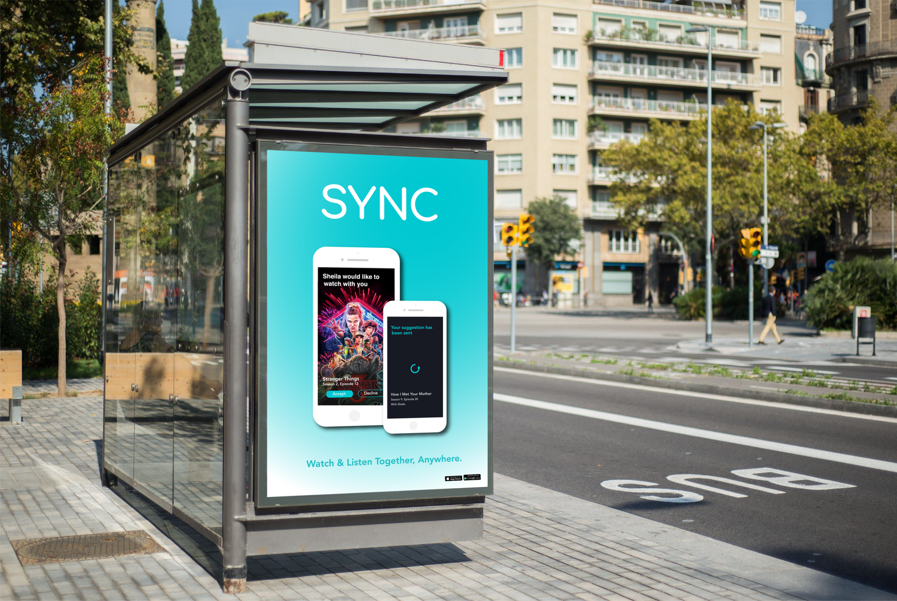
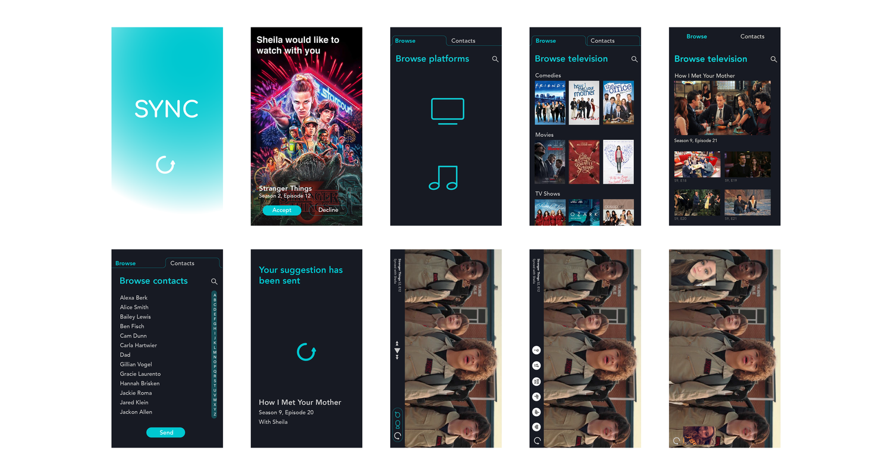

← Back
SYNC
SYNC enables individuals to seamlessly connect and co-view television content from various devices, offering additional functionalities like integrated video chat and prompt response options.

